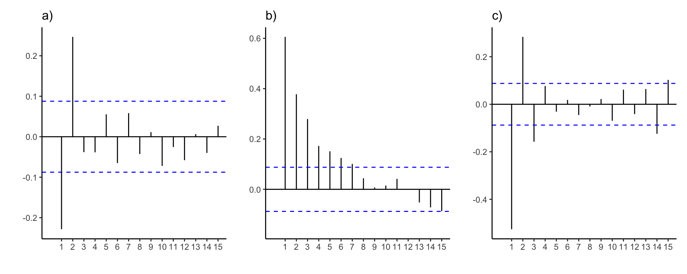

5.9 Oppgaver
- Første ordens autokorrelasjon til en tidsrekke \(Y_t\) er lik \(-0.5\). Andre ordens autokorrelasjon er lik \(0.3\).
- Tegn opp grafen til autokorrelasjonsfunksjonen til \(Y_t\).
- Forklar med ord hva det vil si at autokorrelasjonsfunksjonen til \(Y_t\) ser slik ut for observerte verdier av \(Y_t\).
- Forklar hva som er forskjellen på autokorrelasjonsfunksjonen til \(Y_t\) og den empiriske autokorrelasjonen til \(Y_t\) som vi har regnet ut for eksempel ved hjelp av 100 observerte realiseringer av tidsrekken.
- Tegn opp en graf som kunne vært den empiriske autokorrelasjonsfunksjonen til \(Y_t\) regnet ut for eksempel ved hjelp av 100 observerte realiseringer av tidsrekken.
Løsning
- Graf av autokorrelasjonen:
Første ordens autokorrelasjon er lik \(-0.5\), noe som betyr at korrelasjonen mellom påfølgende observerte verdier av \(Y_t\) er lik \(-0.5\). I praksis betyr det at to påfølgende observasjoner vil ha en tendens til å være ganske forskjellige fra hverandre. Hvis \(Y_t\) er “liten” (på en eller annen relevant skala), så vil \(Y_{t+1}\) ha en tendens til å være “stor”. Og hvis \(Y_{t+1}\) er “stor”, ja da vil \(Y_{t+2}\) igjen ha en tendens til å være “liten”.
Andre ordens autokorrelasjon er lik \(0.3\), noe som betyr at korrelasjonen mellom to observasjoner som er observert med ett tidssteg mellom seg er lik \(0.3\). I praksis betyr det at dersom \(Y_t\) er “liten”, så vil \(Y_{t+2}\) også ha en tendens til å være “liten”, men denne tendensen er noe svakere enn den som er mellom to påfølgende observasjoner, der absoluttverdien til autokorrelasjonen er \(0.5\).
For eksempel kan vi tenke oss at en realisering av \(Y_t\) ser slik ut:
Dette er samme type spørsmål som vi kjenner til med forventningsverdi/gjennomsnitt, samt teoretisk og empirisk varians. En stokastisk variabel \(X\) har en forventningsverdi \(\mu\) og en varians \(\sigma^2\), men disse er i praksis ukjente. Vi kan derimot estimere forventningsverdien ved å ta et gjennomsnitt \(\overline X\), og vi kan estimere den teoretiske variansen ved å regne ut den empiriske variansen \(s^2\). Store talls lov garanterer at dette er gode estimater, ved at \(\overline X \rightarrow \mu\) og \(s^2 \rightarrow \sigma^2\) når antall observasjoner går mot uendelig.
Vi har nøyaktig det samme forholdet mellom empiriske og teoretiske autokorrelasjoner. Autokorrelasjonsfunksjonen til \(Y_t\) som vi beskrev over er den teoretiske, og den er ikke kjent i praksis med mindre vi simulerer fra en kjent tidsrekkemodell.
For et gitt datasett kan vi derimot regne ut den empiriske autokorrelasjonsfunksjonen, som er et estimat av det sanne, teoretiske autokorrelasjonsfunksjonen. Vi vet, fra store talls lov, at dette er et godt estimat som vil konvergere mot sannheten etter hvert som vi får flere og flere observasjoner.
Den empiriske autokorrelasjonsfunksjonen vil ligne på den sanne autokorrelasjonsfunksjonen som vi tegnet opp over, men det vil være noe estimeringsfeil i tillegg som kommer av at vi bare har et endelig antall observasjoner. Laggene med null korrelasjon vil ikke måles til å ha eksakt null autokorrelasjon, men bare om lag 5% av dem vil havne utenfor forkastningsgrensene på 5% signifikansnivå. Vi tegner også inn noen tenkte forkastningsgrenser i figuren.
- Vurdere hvilke(n) tidsrekkemodell(er) som passer til de empiriske autokorrelasjonsplottene under, regnet ut ved hjelp av \(n=500\) observasjoner.

Løsning
Vi har et statistisk signifikant negativt utslag på første lag, og et statistisk signifikant positivt utslag på andre lag. Det er ingen flere lags der autokorrelasjonsfunksjonen er stiatistisk signifikant forskjellig fra null. Det kan tyde på en MA(2)-prosess, med \(\theta_1 <0\) og \(\theta_2>0\).
Autokorrelasjonsfunksjonen går sakte mot null med økende lag. Det kan tyde på en autoregressiv prosess, muligens en AR(1)-prosess med \(\phi_1 > 0\).
Autokorrelasjonsfunksjonen alternerer mellom positive og negative verdier, men i absoluttverdi ser de ut til å avta sakte mot null. Det kan tyde på en autoregressiv prosess, muligens en AR(1)-prosess med \(\phi_1 < 0\).
Det er ikke mulig å entydig fastslå hvilken modell som er “korrekt” ut fra et autokorrelasjonsplott. I alle tilfellene kan det være AR- eller MA-ledd som har for små koeffisienter, til at vi klarer å estimere dem til å være statistisk signifikant forskjellig fra null ved hjelp av datasettet som vi har. Det er også vanskelig å visuelt skille høyere ordens prosesser fra hverandre kun ved å se på autokorrelasjonsplottet. I det midterste plottet over for eksempel, kunne det like gjerne vært med andre- og tredjeordens AR-ledd, uten at vi ville klart å se så stor forskjell på plottet.
(I denne oppgaven er datasettene 500 observasjoner simulert fra henholdsvis en MA(2)-modell med \(\theta_1 = -0.2279\) og \(\theta_2 = 0.2488\), en AR(1)-modell med \(\phi_1 = 0.588\), og en AR(1)-modell med \(\phi_1 = -0.5\).)
- Under har vi anvendt funksjonen
auto.arimafraforecast-pakken for fire tidsrekker. Identifiser hvilken modell som er plukket ut i hvert tilfelle, og skriv den opp:
## Series: ts
## ARIMA(1,0,1) with zero mean
##
## Coefficients:
## ar1 ma1
## 0.4307 -0.6955
## s.e. 0.2427 0.1922
##
## sigma^2 estimated as 0.8962: log likelihood=-135.48
## AIC=276.97 AICc=277.22 BIC=284.78## Series: ts
## ARIMA(2,0,1) with zero mean
##
## Coefficients:
## ar1 ar2 ma1
## 0.3037 0.4736 -0.5945
## s.e. 0.1447 0.0871 0.1489
##
## sigma^2 estimated as 0.9683: log likelihood=-139.01
## AIC=286.01 AICc=286.43 BIC=296.43## Series: ts
## ARIMA(1,1,0)
##
## Coefficients:
## ar1
## 0.3568
## s.e. 0.0933
##
## sigma^2 estimated as 1.01: log likelihood=-141.96
## AIC=287.92 AICc=288.04 BIC=293.13## Series: ts
## ARIMA(2,1,2) with drift
##
## Coefficients:
## ar1 ar2 ma1 ma2 drift
## -0.0001 0.4345 0.2207 0.8386 -0.7286
## s.e. 0.0996 0.1023 0.0609 0.0730 0.3520
##
## sigma^2 estimated as 1.027: log likelihood=-142.71
## AIC=297.43 AICc=298.33 BIC=313.06Løsning
En ARMA(1,1)-modell:
\[Y_t = 0.4307Y_{t-1} - 0.6955u_{t-1} + u_t,\]
En ARMA(2,1)-modell:
\[Y_t = 0.3037Y_{t-1} + 0.4736Y_{t-2} - 0.5945u_{t-1} + u_t,\]
En ARIMA(1,1,0)-modell:
\[\Delta Y_t = 0.3568\Delta Y_{t-1} + u_t,\]
der \(\Delta Y_t\) er tidsrekken \(Y_t\) differensiert en gang. Med andre ord er førstedifferansen til \(Y_t\) en AR(1) prosess med \(\phi_1 = 0.3568\).
En ARIMA(2,1,2)-modell:
\[\Delta Y_t = -0.0001\Delta Y_{t-1} + 0.4345\Delta Y_{t-2} + 0.8386u_{t-1} - 0.7286u_{t-2},\]
Med andre ord er førstedifferansen til \(Y_t\) en ARMA(2,2)-modell.
I alle tilfellene er \(u_t\) hvit støy.
- Regn ut forventning og varians til følgende tidsrekkemodeller og avgjør om de er stasjonære. I alle tilfeller er \(u_t\) hvit støy der \(E(u_t)=0\) og \(Var(u_t)=\sigma^2\).
- \(Y_t = t + u_t\)
- \(Y_t = 3 + u_t\)
- \(Y_t = t\cdot u_t\)
- \(Y_t = u_1 + u_2 + \dots + u_t\)
Løsning
- \[E(Y_t) = E(t + u_t) = E(t) + E(u_t) = t + 0 = t.\] \[Var(Y_t) = Var(t + u_t) = Var(t) + Var(u_t) = 0 + \sigma^2 = \sigma^2\]
Siden forventningsverdien ikke er konstant kan ikke dette være en stasjonær tidsrekke.
\[E(Y_t) = E(3 + u_t) = E(3) + E(u_t) = 3 + 0 = 3.\] \[Var(Y_t) = Var(3 + u_t) = Var(3) + Var(u_t) = 0 + \sigma^2 = \sigma^2\]
Her er både forventning og varians konstant i tid så dette kan være en stasjonær tidsrekke (vi må formelt også sjekke at autokorrelasjonen er konstant)
\[E(Y_t) = E(t\cdot u_t) = t \cdot E(u_t) = t\cdot 0 = 0.\] \[Var(Y_t) = Var(t\cdot u_t) = t^2\cdot Var(u_t) = t^2\sigma^2 \]
Siden varians ikke er konstant i tid kan ikke dette være en stasjonær tidsrekke.
\[E(Y_t) = E(u_1 + u_2 + \dots + u_t) = E(u_1) + E(u_2) + \cdot + E(u_t) = 0 + 0 + \dots + 0 = 0.\] \[\begin{align*} Var(Y_t) &= Var(u_1 + u_2 + \dots + u_t) \\ & = Var(u_1) + Var(u_2) + \dots + Var(u_t) = \sigma^2 + \sigma^2 + \dots + \sigma^2 = t\sigma^2 \end{align*}\] Siden variansen ikke er konstant i tid kan ikke dette være en stasjonær tidsrekke.